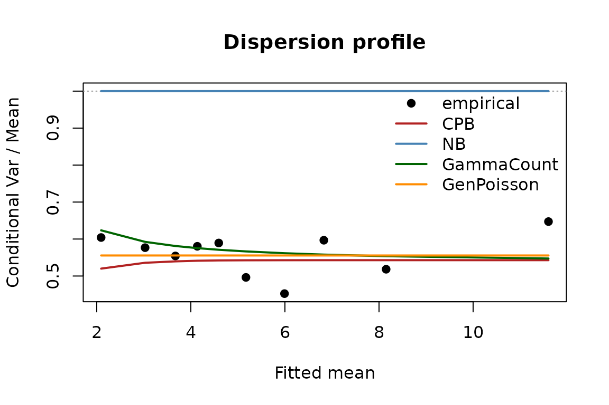
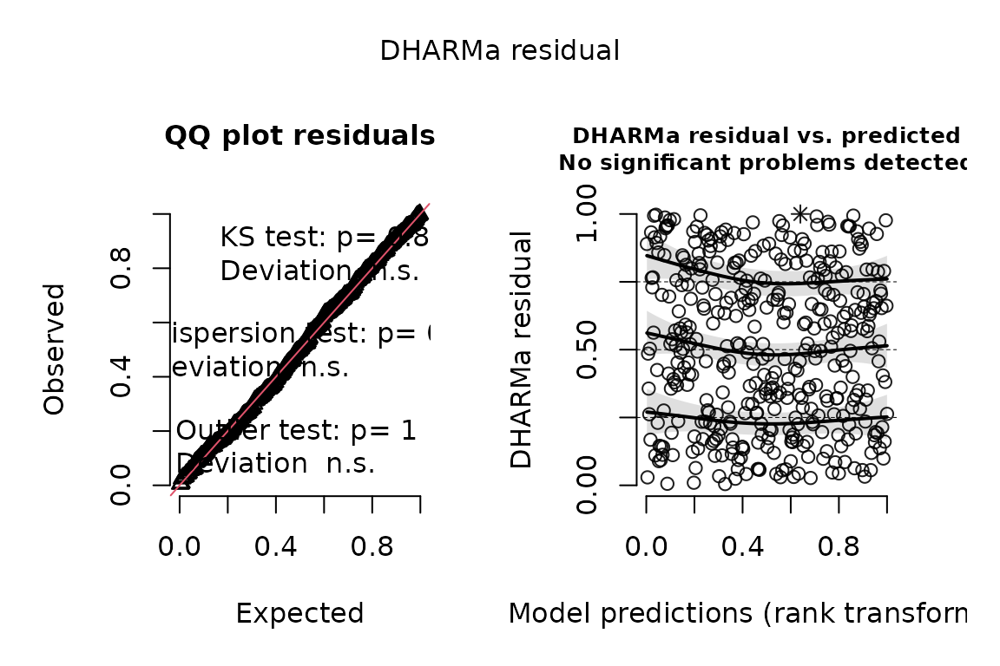

underdisp provides tools for detecting and modeling
underdispersion in count data: the case where the conditional
variance is below the conditional mean, so counts cluster more tightly
around their expectation than a Poisson allows. The Poisson and negative
binomial defaults cannot represent it; the negative binomial in
particular collapses onto the Poisson when the data are
underdispersed.
Simulating an underdispersed count
We generate a count with a conditional variance-to-mean ratio of about one half.
Screening
ud_screen() returns a marginal verdict, and, for
zero-inflated outcomes, an at-risk verdict benchmarked against a
zero-truncated Poisson (which is what separates genuine
underdispersion from the artifact of conditioning on positive
counts).
ud_screen(y ~ x, data = d, run_cpb = FALSE)
#>
#> === Underdispersion screen ===
#> Formula: y ~ x
#> N=400 mean=5.527 max=22 %zero=1.8 (unconditional var/mean=1.89)
#>
#> MARGINAL verdict: UNDERDISPERSED
#> Pearson=0.564 prop.slope=-0.391 (p=<2e-16)
#> NB vs Poisson LR = -0.01 (p= 0.5 ; sig => overdispersion)
#>
#> AT-RISK (y>0) verdict:UNDERDISPERSED [n_pos=393]
#> ZTP-Pearson = 0.569 (underdispersed if < 0.885, the calibrated 5% threshold)
#>
#> Model comparison (log-lik):
#> Poisson NB GP COMP CPB
#> -798.901 -798.904 -770.154 -772.010 NA
#>
#> COM-Poisson (full data): nu = 1.84 (> 1 = underdispersed, soft tail)Fitting the continuous parameter binomial
cpb() fits the CPB, with truncated = TRUE
for the common case in which underdispersion lives among the positive
counts of a zero-inflated outcome.
fit <- cpb(y ~ x, data = d[d$y > 0, ], se = "none")
summary(fit)
#>
#> Continuous Parameter Binomial regression (zero-truncated)
#> N = 393 inference: none
#>
#> Estimate Std. Error z value Pr(>|z|)
#> (Intercept) 1.58279 NA NA NA
#> x 0.49215 NA NA NA
#>
#> alpha = 0.5256 (profile 95% CI: 0.487 to 0.613)
#> Implied ceiling lambda/(1-alpha): median 10.22 range 2.48 to 37.8
#> logLik = -745.05 AIC = 1496.1
#> LR vs ZT-Poisson (H0: alpha = 1): 58.66, p 9.3805e-15The dispersion parameter alpha summarizes the
compression, and each observation carries an implied ceiling
lambda / (1 - alpha). The CPB is a binomial with a
non-integer number of trials, renormalized over its finite support, so
its mean is not exactly the rate exp(x'b):
fitted() and predict(type = "response") report
the exact mean of the fitted distribution (the conditional mean given
Y >= 1 for a zero-truncated fit), and
predict(type = "rate") the rate.
Quantities of interest
Predicted means, the implied ceiling, and first differences are available for user-specified covariate profiles.
predict(fit, newdata = data.frame(x = c(-1, 0, 1)), type = "response")
#> [1] 3.027411 4.875001 7.964198
implied_ceiling(fit, newdata = data.frame(x = 0))
#> lambda ceiling lower upper
#> 1 4.868501 10.26202 9.491782 12.57789
first_difference(fit, "x", from = -1, to = 1)
#> component from to diff
#> mean 3.027 7.964 4.937Testing equidispersion
The Poisson is the equidispersed member of every family in the
package (alpha = 1 for the CPB, delta = 1 for
the GEC, nu = 1 for the COM-Poisson, and so on), so
dispersion_test() tests a fitted model’s dispersion
parameter against its Poisson value by a likelihood-ratio test on the
fitted design, with fixed effects carried into the null. Where the
Poisson value sits on the boundary of the parameter space (the CPB, the
negative binomial) the test uses the Self–Liang mixture and is
one-sided; elsewhere the alternative can be two-sided or directional.
For a plain Poisson fit the Cameron–Trivedi auxiliary regression is
available as method = "auxiliary".
dispersion_test(fit)
#>
#> Likelihood-ratio test of equidispersion (CPB vs Poisson; boundary null, Self-Liang mixture)
#>
#> data: y ~ x
#> LR = 58.6579 (logLik: fitted family = -745.05, Poisson = -774.38), p-value = 9.381e-15
#> alternative hypothesis: underdispersion
#> estimate: alpha = 0.5256 (Poisson value 1)
dispersion_test(count_reg(y ~ x, data = d, family = "poisson"),
method = "auxiliary", alternative = "under")
#>
#> Cameron-Trivedi auxiliary regression test of equidispersion (Var = mu + a mu^2)
#>
#> data: y ~ x
#> t = -9.3813, p-value = < 2.2e-16
#> alternative hypothesis: underdispersion
#> estimate: a = -0.0619 (Poisson value 0)Bootstrap inference
Because the CPB’s support depends on its parameters, Hessian-based
standard errors are unreliable; coefficient inference uses a
cold-multistart pairs bootstrap (validated to nominal coverage in the
companion paper), and the dispersion parameter carries a
profile-likelihood interval. cores = runs the replicates on
a socket cluster seeded from the session.
fit_b <- cpb(y ~ x, data = d[d$y > 0, ], se = "bootstrap", B = 99)
summary(fit_b)
#>
#> Continuous Parameter Binomial regression (zero-truncated)
#> N = 393 inference: bootstrap
#>
#> Estimate Std. Error z value Pr(>|z|)
#> (Intercept) 1.582786 0.017445 90.731 < 2.2e-16 ***
#> x 0.492152 0.018314 26.872 < 2.2e-16 ***
#> ---
#> Signif. codes: 0 '***' 0.001 '**' 0.01 '*' 0.05 '.' 0.1 ' ' 1
#>
#> alpha = 0.5256 (profile 95% CI: 0.487 to 0.613)
#> Implied ceiling lambda/(1-alpha): median 10.22 range 2.48 to 37.8
#> logLik = -745.05 AIC = 1496.1
#> LR vs ZT-Poisson (H0: alpha = 1): 58.66, p 9.3805e-15
#> (99 bootstrap resamples converged)
irr(fit_b) # rate ratios with percentile intervals
#> term equation ratio estimate lower upper method
#> (Intercept) count IRR 4.869 4.722 5.045 bootstrap (stored)
#> x count IRR 1.636 1.578 1.686 bootstrap (stored)
confint(fit_b) # coefficients (percentile) and alpha (profile likelihood)
#> 2.5% 97.5%
#> (Intercept) 1.5521549 1.6183956
#> x 0.4561561 0.5224254
#> alpha 0.4870825 0.6129318The free-dispersion GEC
gec() fits King’s generalized event count (Katz) model,
whose dispersion delta is estimated freely, so the data
choose the direction of dispersion rather than the analyst presuming it.
On the underdispersed count above it recovers delta well
below one; on a Poisson outcome it sits at one.
gec(y ~ x, data = d, se = "none") # delta ~ 0.5
#> Generalized event count (Katz family) regression
#> Call: gec(formula = y ~ x, data = d, se = "none")
#> (Intercept) x
#> 1.5768 0.4964
#>
#> dispersion delta (Katz; Var/Mean on an unbounded support) = 0.553 [underdispersed (LR p = 2.3e-14)]
#> logLik = -769.78, n = 400
gec(y ~ x, data = data.frame(y = rpois(n, exp(1 + 0.4 * x)), x = x),
se = "none") # delta ~ 1
#> Generalized event count (Katz family) regression
#> Call: gec(formula = y ~ x, data = data.frame(y = rpois(n, exp(1 + 0.4 * x)), x = x), se = "none")
#> (Intercept) x
#> 0.9649 0.3493
#>
#> dispersion delta (Katz; Var/Mean on an unbounded support) = 0.954 [equidispersion not rejected (LR p = 0.52)]
#> logLik = -740.83, n = 400The GEC carries the same zero-truncated, hurdle
(hurdle_gec()), zero-inflated (zi_gec()), and
fixed-effects (gec_fe()) variants as the CPB.
High-dimensional fixed effects
Underdispersion is typically a within-unit phenomenon that
pooled analyses hide. cpb_fe() absorbs a full set of unit
fixed effects by concentrating them out of the likelihood, so it scales
to thousands of units.
panel <- do.call(rbind, lapply(1:50, function(i) {
xx <- rnorm(12); NN <- pmax(round(exp(rnorm(1, 0, 0.4) + 0.4 * xx) / 0.5), 1)
data.frame(unit = i, x = xx, y = rbinom(12, NN, 0.5))
}))
fe_fit <- cpb_fe(y ~ x, data = panel, fe = "unit")
fe_fit
#> CPB regression with 50 unit fixed effects (concentrated likelihood)
#> Coefficients:
#> x
#> 0.2979
#>
#> alpha (shape parameter): 0.4735 median implied bound: 2.25
#> Note: alpha is subject to incidental-parameters bias for short panels; see ?cpb_fe.
dispersion_test(fe_fit) # against a Poisson with the same unit effects
#>
#> Likelihood-ratio test of equidispersion (CPB vs Poisson; boundary null, Self-Liang mixture)
#>
#> data: y ~ x
#> LR = 216.3068 (logLik: fitted family = -599.47, Poisson = -707.63), p-value = < 2.2e-16
#> alternative hypothesis: underdispersion
#> estimate: alpha = 0.4735 (Poisson value 1)Comparing the family
compare_dispersion() fits the Poisson, negative
binomial, the native soft-tail COM-Poisson, the free-dispersion GEC, and
the hard-ceiling CPB, and reports a fit comparison plus the CPB’s
ceiling-exceedance share.
compare_dispersion(y ~ x, data = d)$table
#> df logLik AIC BIC logscore rps zero_fit
#> Poisson 2 -798.9009 1601.802 1609.785 1.997252 0.9855061 0.024243957
#> NegBinomial 3 -798.9042 1603.808 1615.783 1.997261 0.9855095 0.024244780
#> COM-Poisson 3 -772.0096 1550.019 1561.994 1.930024 0.9631112 0.009312565
#> CPB 3 -769.2022 1544.404 1556.379 1.923006 0.9642686 0.010295571
#> GEC 3 -769.7769 1545.554 1557.528 1.924442 0.9644015 0.010538440The wider underdispersed family
Underdispersion has more than one mechanism, and
count_reg() fits the distributions that express them
through one interface: the classical COM-Poisson
("compois", rate-parameterized) and Huang’s
mean-parameterized COM-Poisson ("mpcmp", a soft tail), the
Consul–Jain generalized Poisson ("genpois", constant
variance-to-mean ratio, finite support when underdispersed),
Winkelmann’s gamma-count ("gammacount", events with more
regular timing than a Poisson process), and Efron’s double Poisson
("doublepois"). Each inherits fixed effects,
zero-truncation, hurdle and zero-inflated forms, offsets, frequency
weights, robust and cluster-robust standard errors, and every method in
the package, so compare_models() places them next to the
CPB on one footing.
fits <- list(
CPB = cpb(y ~ x, data = d, truncated = FALSE, se = "none"),
Poisson = count_reg(y ~ x, data = d, family = "poisson"),
NB = count_reg(y ~ x, data = d, family = "negbin"),
`COM-Poisson`= count_reg(y ~ x, data = d, family = "mpcmp"),
GenPoisson = count_reg(y ~ x, data = d, family = "genpois"),
GammaCount = count_reg(y ~ x, data = d, family = "gammacount"),
DoublePois = count_reg(y ~ x, data = d, family = "doublepois")
)
do.call(compare_models, fits)
#> df logLik AIC BIC logscore rps
#> CPB 3 -769.2022 1544.404 1556.379 1.923006 0.9642686
#> GenPoisson 3 -770.1544 1546.309 1558.283 1.925386 0.9643720
#> GammaCount 3 -771.8363 1549.673 1561.647 1.929591 0.9632720
#> COM-Poisson 3 -772.6416 1551.283 1563.258 1.931604 0.9646314
#> DoublePois 3 -774.3085 1554.617 1566.591 1.935771 0.9651785
#> Poisson 2 -798.9009 1601.802 1609.785 1.997252 0.9855061
#> NB 3 -798.9008 1603.802 1615.776 1.997252 0.9855095On underdispersed data the negative binomial collapses onto the
Poisson, while the underdispersed families capture the compression and
win on AIC and the proper scores. The families differ in how their
dispersion moves with the mean, and dispersion_profile()
sets the empirical conditional variance-to-mean ratio, by bins of the
fitted mean, against the curve each family implies:
dispersion_profile(CPB = fits$CPB, NB = fits$NB, GammaCount = fits$GammaCount,
GenPoisson = fits$GenPoisson)
The correlated-random-effects device (mundlak()) and
matching d/p/q/r
functions (dcpb(), dgec(),
dcompois(), dgammacount(),
dgenpois(), ddoublepois()) round out the
family.
Excess zeros: hurdle and zero-inflated models
Many count outcomes mix a participation process (most units at zero) with a tight positive count. The bundled peacekeeping panel – the number of UN operations each state contributes troops to per year – shows the package’s central move: marginally the count looks overdispersed, but conditioning on country fixed effects and benchmarking the positive counts against a zero-truncated Poisson, the at-risk process is underdispersed.
data(peacekeeping)
ud_screen(contributions ~ democracy + lgdppc + lpop + milper + factor(iso3),
data = peacekeeping, run_cpb = FALSE, run_gp = FALSE)
#>
#> === Underdispersion screen ===
#> Formula: contributions ~ democracy + lgdppc + lpop + milper + factor(iso3)
#> N=4448 mean=3.191 max=18 %zero=41.5 (unconditional var/mean=4.56)
#>
#> MARGINAL verdict: OVERDISPERSED
#> Pearson=1.086 prop.slope=0.191 (p=<2e-16)
#> NB vs Poisson LR = 18.11 (p= 1e-05 ; sig => overdispersion)
#>
#> AT-RISK (y>0) verdict:UNDERDISPERSED [n_pos=2602]
#> ZTP-Pearson = 0.841 (underdispersed if < 0.955, the calibrated 5% threshold)
#>
#> Model comparison (log-lik):
#> Poisson NB GP COMP CPB
#> -6645.816 -6636.761 NA NA NAThat is the case for a two-part model with an underdispersed
intensity. hurdle_cpb() joins a participation logit to a
zero-truncated CPB, and zi_cpb() fits the structural-zero
mixture; zi_test() and compare_models()
adjudicate between them.
z <- rnorm(n)
yh <- rhurdle_cpb(n, lambda = exp(1.2 + 0.3 * x), alpha = 0.5,
p = plogis(0.3 + 0.8 * z))
dh <- data.frame(y = yh, x = x, z = z)
h <- hurdle_cpb(y ~ x, data = dh, participation = ~ z)
zi <- zi_cpb(y ~ x, data = dh, zero = ~ z)
compare_models(hurdle = h, mixture = zi)
#> df logLik AIC BIC logscore rps
#> hurdle 5 -609.9920 1229.984 1249.941 1.524980 1.039174
#> mixture 5 -610.1175 1230.235 1250.192 1.525294 1.040124The hurdle’s first_difference() separates the extensive
and intensive margins exactly – which channel a covariate moves, not
just the blended marginal effect. One practical note: because the hurdle
factorizes, its participation stage is an ordinary logistic regression;
if a dummy-heavy participation equation separates, fit that stage with a
dedicated bias-reduction package (logistf,
brglm2) alongside this package’s zero-truncated
intensity.
Weights
Every estimator takes frequency weights (a weight of
w is equivalent to w copies of the row, in the
likelihood, the information, and the bootstrap), so tabulated data fit
exactly as the expanded data would:
Short panels: bias-corrected fixed effects
The concentrated fixed-effects dispersion estimate carries the
incidental- parameters bias of order 1/T: with few observations per
unit, alpha is biased downward (the panel looks
more underdispersed than it is). bias_correct = "jackknife"
removes the leading bias term by the split-panel jackknife of Dhaene and
Jochmans (2015), refitting on each unit’s temporal halves.
short <- do.call(rbind, lapply(1:30, function(i) {
xx <- rnorm(8); NN <- pmax(round(exp(1.0 + rnorm(1, 0, 0.4) + 0.3 * xx) / 0.5), 1)
data.frame(unit = i, x = xx, y = rbinom(8, NN, 0.5))
}))
ml <- cpb_fe(y ~ x, data = short, fe = "unit")
jk <- cpb_fe(y ~ x, data = short, fe = "unit", bias_correct = "jackknife")
c(ml = ml$alpha, jackknife = jk$alpha) # truth is 0.5; ML is biased downward
#> ml jackknife
#> 0.3874510 0.4800524The correction is only valid when the two half-panels estimate the same parameter (the method’s time-homogeneity requirement), so it carries a validity gate: the panel is also split cross-sectionally by units – a placebo that is exchangeable under any time pattern – and if the temporal halves disagree beyond that placebo noise, the correction is refused with a warning naming the failed assumption and the maximum-likelihood fit is returned. On a trending or regime-changing panel, the refusal is the correct answer. The gate is deliberately powered over sized: in calibration it refuses about 9% of genuinely homogeneous panels (you keep the ordinary ML fit) while catching 98% of dispersion regime changes and all smooth unmodeled trends.
Simulated-residual diagnostics with DHARMa
Every fitted model in the package has a simulate()
method, so the whole family plugs into DHARMa’s
simulated-residual diagnostics.
sims <- simulate(h, nsim = 100, seed = 1)
res <- DHARMa::createDHARMa(simulatedResponse = as.matrix(sims),
observedResponse = dh$y,
fittedPredictedResponse = fitted(h),
integerResponse = TRUE)
plot(res)